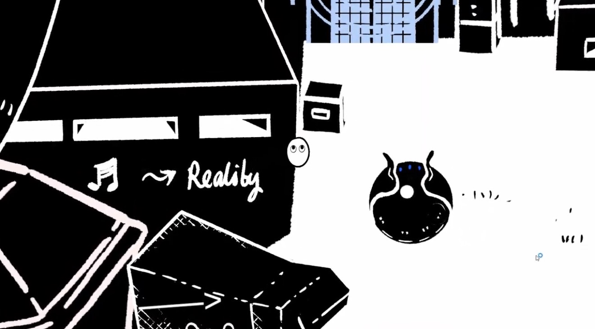
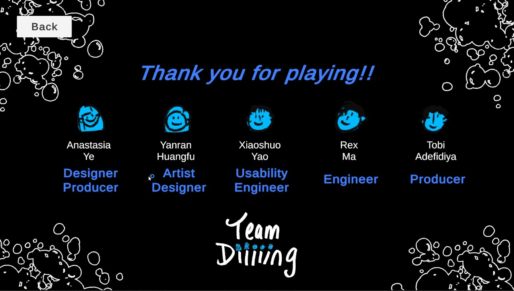
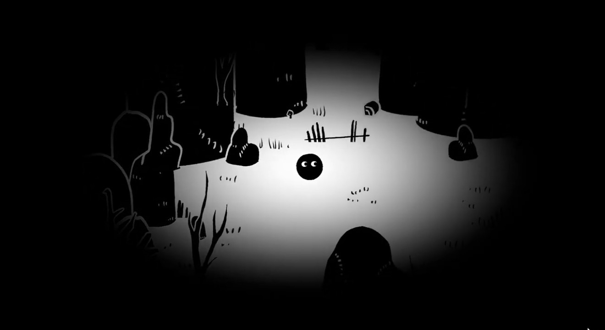
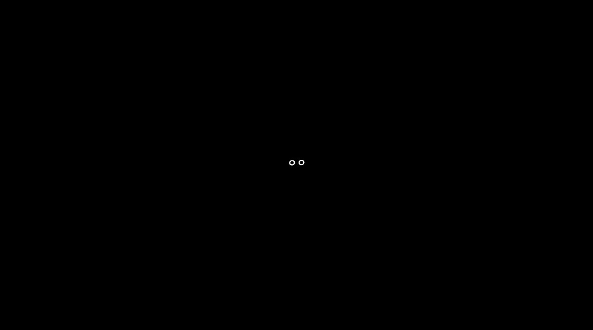
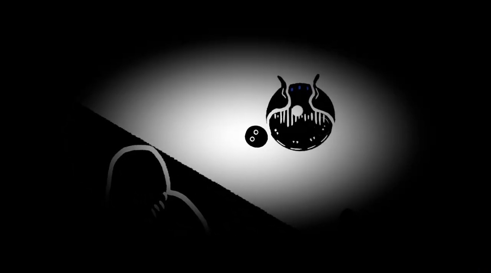
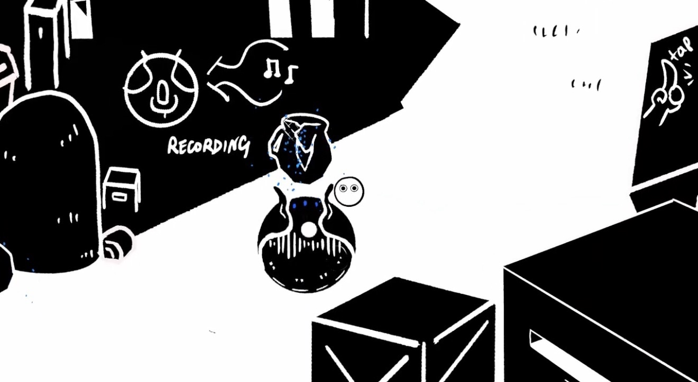
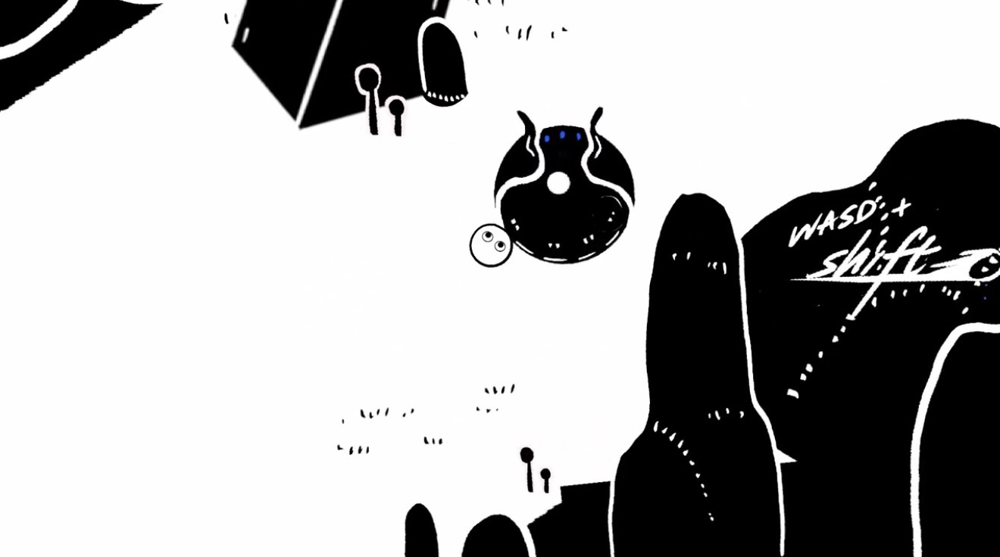
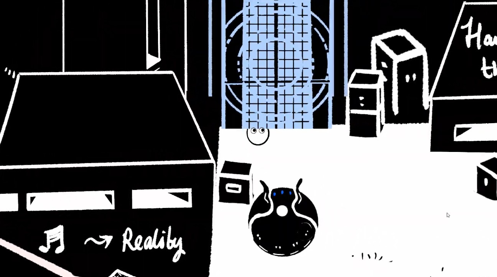
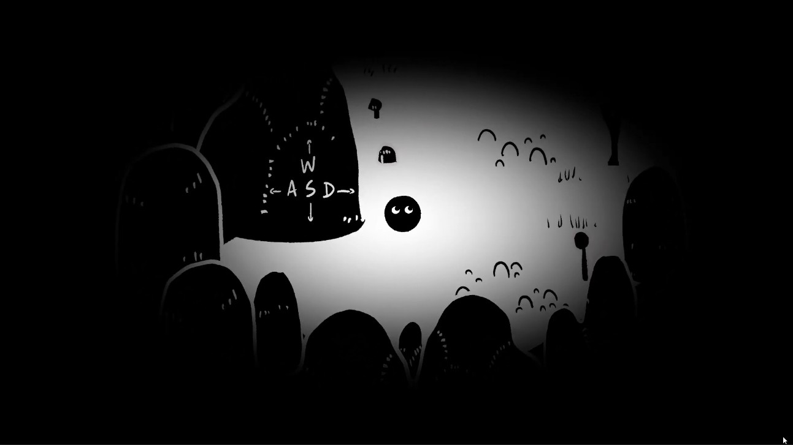

Overview
ORUU is an adventure about a newborn magical creature emerging from a swamp into a silent, post-apocalyptic world. You awaken an old Robot relic by accident and travel together across the wasteland, restoring sound and life at the cost of the Robot’s energy.
First life after silence
You’re innocent, curious, and learning the world by making sound.
Creature + Robot
Companionship forms through shared exploration and care in a hostile, quiet world.
Restore → release
Bringing vitality back requires accepting an inevitable goodbye at the summit.
Players feel companionship traveling with the Robot through silence and the bittersweet beauty of letting go when paths must part.
My Role
I produced ORUU, making sure everyone worked to their strengths, stayed aligned on scope, and hit milestones with healthy time management.
Strengths-first planning
- Assigned ownership by discipline (program/design/art/QA) and created clear handoff points.
- Kept the “experience goal” as the anchor for decisions (companionship → farewell).
- Protected scope by prioritizing: sound interactions, Robot companionship, reactor arc.
Milestones + communication
- Ran check-ins and ensured blockers were surfaced early.
- Tracked deliverables (assets, sequences, UI) against deadlines.
- Supported QA pass + iteration cycles to keep play feel coherent.
Core Loop
Explore a silent space → make sounds → Robot records/replays → environment reacts → progress toward reactors.
Explore
Move through rotted machine ruins and polluted terrain, searching for interactables and pathways.
Create sound
Walk/roll/bump objects to trigger unique sounds from the environment.
Record & replay
The Robot stores sounds, then replays the last recorded sound to trigger “magic events.”
Travel across the wasteland and shut down remaining reactors. Each shutdown cleans the world a little more, leading to the final summit.
Core Mechanics
Movement and sound are the language of play. Puzzles and story beats are solved through interactions that produce and re-use sound.
Walk • Roll • Bump
- Walking: Slower, freely steerable.
- Rolling: Faster, limited steering while in motion; impacts trigger sound interactions.
- Bumping: Colliding with objects emits sounds that the Robot can record.
Sound emitters & listeners
- Emitters: Objects that produce distinct sounds when hit.
- Listeners: Objects that react to specific sounds (unlock, wind, growth, break obstacles).
- Mud/Pollution: Muffles hearing and slows the player if it builds up; Robot helps cleanse.
Narrative Sequences
Three sequences: Encounter → Companionship → Summit farewell.
Beginning — Our Encounter
Birth in the swamp → you bump the sleeping Robot → it records your sounds → you escape the well and see the giant reactor.
Middle — Time Together
Explore + create powerful sounds → Robot cleanses pollution → separation + fear → reunion at a reactor → first rain since the apocalypse.
End — To the Summit
World cleans as reactors shut down → realize Robot’s fate → final reactor at the peak → archive of small shared moments → rebirth begins.
Systems & AI
Core systems that support companionship and sound-driven puzzle solving.
Follow • Record • Emit
- Pathfinding: Follows the player using simple NavMesh logic.
- Recording radius: Stores sounds emitted nearby into a sound inventory.
- Playback: Sumping the Robot causes it to emit the last recorded sound.
- Progress lights: Robot indicators light up at major checkpoints.
Pollution → clarity
- Mud buildup: Muffles hearing and narrows sight as it accumulates.
- Cleansing beats: Narrative moments and Robot care restore clarity.
- Reactor shutdown: Each shutdown cleans the environment and changes ambience.



Controls
Simple inputs so players can focus on sound, companionship, and exploration.
WASD
Move the creature around the world.
Hold Shift
Switch to rolling state for speed and impact interactions.
Bump / collide
Trigger emitters, record sounds, and cause Robot playback.
Media Gallery
Add screenshots and short clips from each sequence.






Takeaways
Experience goal keeps scope sane
When scope pressure hit, we anchored decisions to companionship → farewell, and cut anything that didn’t serve it.
Sound as a puzzle language
Emitters/listeners + Robot playback turns exploration into discovery without heavy UI complexity.
Mechanics support meaning
The Robot’s care and energy cost makes the ending feel earned rather than sudden.
Tune “pollution muffling” readability, polish VFX for “sound recorded,” and strengthen the summit archive moment with clearer audio callbacks.